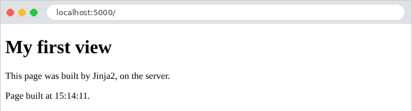
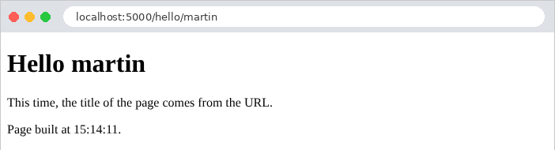
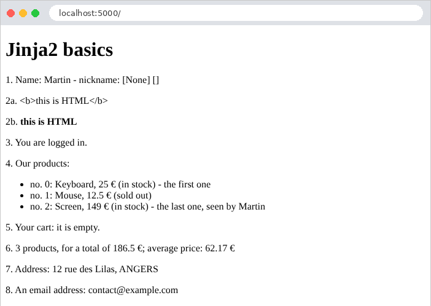
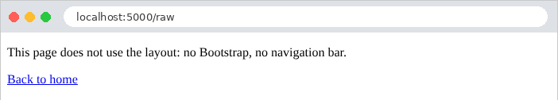
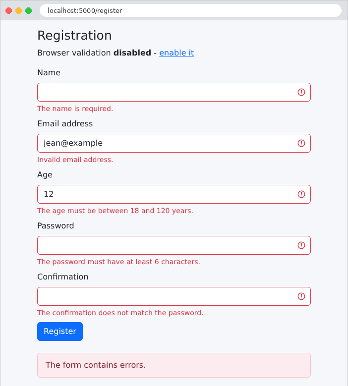
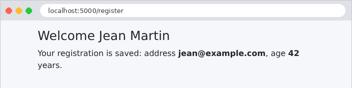
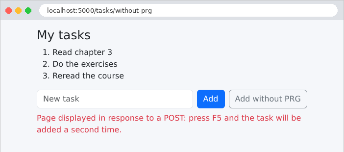

4. Die View und ihr Modell
Bisher haben die Actions ihre Antworten selbst erzeugt: Text, JSON und einige in einen String geschriebene HTML-Tags. In einer MVC-Anwendung ist dies die Aufgabe einer View: einer Datei, die die HTML-Seite beschreibt, mit Platzhaltern für die Daten, die ihr von der Action übergeben werden – das View-Modell.
[Flask] wird mit einer View-Engine ausgeliefert, [Jinja2], die vom selben Team entwickelt wurde (dem Projekt *Pallets*). Andere Engines können verwendet werden ([Mako], [Chameleon] ...), aber [Jinja2] ist in [Python] mit Abstand die am weitesten verbreitete: Man findet sie in [Django] (als Option), in [Ansible], in Generatoren statischer Websites ... Sie wird in diesem Kurs verwendet.
Eine [Jinja2]-View (die Dokumentation bezeichnet sie als *Template*, als Seitenvorlage) ist eine Textdatei – hier HTML –, in der drei Arten von Tags auf dem Server interpretiert werden:
- [{{ expression }}]: der Wert eines Ausdrucks, der in die Seite eingefügt wird;
- [{% instruction %}]: eine Anweisung: Bedingung ([if]), Schleife ([for]), Template-Vererbung ([extends], [block]), Einbindung ([include]), Makro ...;
- [{# comment #}]: ein Kommentar, der auf der erzeugten Seite nicht erscheint.
Alles andere wird unverändert kopiert. Die Syntax der Ausdrücke ähnelt der von [Python]. Das unterscheidet sich von [Thymeleaf], der View-Engine des Kurses [Spring MVC], deren Views gültige HTML-Dateien sind, die mit [th:]-Attributen angereichert werden; stattdessen rückt es [Jinja2] näher an [Razor] ([ASP.NET Core MVC]), das HTML und Code mischt. Standardmäßig sucht [Flask] die Views im Ordner [templates] der Anwendung.
4.1. Beispiel 13: Eine erste View
4.1.1. Das View-Modell: models/page.py
Das View-Modell ist eine einfache [dataclass] (siehe Beispiel 06): die drei Informationen, die die View anzeigen wird. Es ist nicht zwingend, das Modell einer View als Klasse zu definieren: Es könnten auch drei einzelne Variablen an die View übergeben werden. Eine Klasse dokumentiert jedoch, was die View erwartet, und erlaubt es dem Editor, den Code der Action zu überprüfen. Diesen Ansatz wird die Fallstudie verfolgen, in der jede View ihre eigene Modellklasse hat.
4.1.2. Der Controller: controllers/views.py
- Zeile 4: importiert die Funktion [render_template];
- Zeilen 16–19: Die Action erstellt das View-Modell. [datetime.now().strftime("%H:%M:%S")]: die aktuelle Uhrzeit, formatiert (siehe Beispiel 12);
- Zeile 20: [render_template] weist [Jinja2] an, die Seite zu erzeugen: Der erste Parameter ist der Pfad der View relativ zum Ordner [templates]; die folgenden benannten Parameter sind die Variablen der View; hier gibt es nur eine: [model]. [render_template] gibt den Text der erzeugten Seite zurück, der zur Antwort der Action wird (vom Typ [text/html]);
- Zeile 28: eine andere View mit einer anderen Variablen ([name]). Das Tupel [(page, 404)] sendet die Seite mit dem Statuscode 404 (siehe Beispiel 03): eine benutzerdefinierte Fehlerseite;
- Zeilen 29–33: dieselbe View wie bei der Action [index], mit einem anderen Modell. Das ist der Vorteil der Trennung von Actions und Views: Eine einzige View kann von mehreren Actions verwendet werden.
4.1.3. Die View: templates/views/index.html
- Zeile 5: ein [Jinja2]-Kommentar;
- Zeile 6: [{{ model.title }}] fügt den Wert des Attributs [title] der Variablen [model] ein. Die Punktnotation von [Jinja2] ist flexibler als die von [Python]: [model.title] sucht zuerst nach einem Attribut [title] und, falls es nicht gefunden wird, nach einem Schlüssel ["title"] (wenn [model] ein Dictionary ist). Der Code der View muss also nicht wissen, ob sein Modell ein Objekt oder ein Dictionary ist.
Alles, was durch [{{ }}] eingefügt wird, wird maskiert: Die Zeichen [<], [>], [&], ["] und ['] werden durch ihre HTML-Entitäten ersetzt. Das ist die Rolle, die die Funktion [escape] in Beispiel 09 gespielt hat, doch diesmal geschieht es automatisch: [Flask] aktiviert das automatische Maskieren (*autoescape*) für Views, deren Namen auf [.html], [.htm], [.xml], [.xhtml], oder [.svg] enden. Dadurch wird verhindert, dass eine View versehentlich von einem Benutzer gelieferten HTML-Code in die Seite einfügt.
4.1.4. Die View: templates/views/unknown.html
Eine View muss kein Objekt erhalten: Die Variable [name] ist ein String.
4.1.5. Ausführung


Die Rohantwort zeigt die Arbeit von [Jinja2]: Die [{{ }}]-Tags wurden durch ihre Werte ersetzt, und der Kommentar ist verschwunden (an seiner Stelle bleibt eine Leerzeile; im nächsten Beispiel sehen wir, wie sich das vermeiden lässt).
Die „benutzerdefinierte“ Fehlerseite, gefolgt von einem Namen, der HTML enthält ([<b>martin], in der URL codiert):
Das [<b>]-Tag wurde maskiert, ohne dass eine Action oder eine View etwas dazu beitragen musste.
4.2. Beispiel 14: Die Sprache Jinja2
Dieses Beispiel vereint die wichtigsten Konstrukte von [Jinja2] in einer einzigen View.
4.2.1. Das Modell und die Action
Das Modell enthält Werte verschiedener Typen: Strings, [None], boolesche Werte, Listen von Objekten, leere Listen und Objekte, die andere Objekte enthalten. Der Typ [Decimal] aus dem Standardmodul [decimal] stellt Dezimalzahlen exakt dar (im Gegensatz zum Typ [float], bei dem [0.1 + 0.2] gleich [0.30000000000000004] ist); dies ist der Typ, der für Geldbeträge zu verwenden ist.
Die Action erstellt das Modell und übergibt es an die View. [Decimal("12.5")]: Ein Dezimalwert wird aus einem String erzeugt, um die Verwendung eines ungenauen [float] zu vermeiden.
4.2.2. Konfiguration: app.py
- Zeilen 12–13: [app.jinja_env] ist die [Jinja2]-Umgebung der Anwendung – das Objekt, das die Views lädt und ausführt. Standardmäßig hinterlässt ein [{% %}]-Tag, das allein in seiner Zeile steht, die davorstehenden Leerzeichen und den folgenden Zeilenumbruch in der erzeugten Seite: Eine Schleife würde zahlreiche Leerzeilen erzeugen. [trim_blocks] entfernt den Zeilenumbruch nach einem Tag, während [lstrip_blocks] die davorstehenden Leerzeichen entfernt. Diese beiden Einstellungen wirken sich nicht auf die Darstellung der Seite aus (der Browser ignoriert diese Leerraumzeichen), machen das erzeugte HTML aber lesbarer. Alle folgenden Beispiele aktivieren sie.
4.2.3. Die View: templates/basics/index.html
- Zeilen 9–10: [{% set %}] erzeugt eine View-Variable. Filter transformieren einen Wert: [value | filter] or [value | filter(parameters)]. Der Filter [sum(attribute="price")] summiert die Attribute [price] der Elemente einer Liste; der Filter [length] gibt die Länge einer Liste zurück. [Jinja2] bietet etwa fünfzig Filter: [upper], [lower], [title], [trim], [join], [sort], [round], [default], [replace], [truncate] ... ;
- Zeile 15: Der Wert [None] wird angezeigt ... [None]. Der Filter [default(value, true)] ersetzt einen „leeren“ Wert ([None], leerer String, null) durch den angegebenen Wert; ohne den zweiten Parameter [true] würde er nur eine nicht definierte Variable ersetzen;
- Zeilen 17–18: [{{ }}] maskiert HTML (2a); der Filter [safe], erklärt dagegen, dass der Wert sicheres HTML ist, das unverändert eingefügt wird (2b). [safe] ist für HTML reserviert, das die Anwendung selbst erzeugt hat, niemals für Benutzereingaben;
- Zeilen 20–24: eine Bedingung: [{% if %}], [{% elif %}], [{% else %}], [{% endif %}]. Anders als [Python], dessen Blöcke durch Einrückung abgegrenzt werden, [Jinja2] schließt jeden Block mit einem [end...]-Tag ab;
- Zeilen 28–34: eine Schleife [{% for %}] ... [{% endfor %}]. Innerhalb der Schleife beschreibt die Spezialvariable [loop] den Zustand der Schleife: [loop.index] (die Nummer des Durchlaufs, bei 1 beginnend), [loop.index0] (bei 0 beginnend), [loop.first], [loop.last] (true beim ersten bzw. letzten Durchlauf), [loop.length] (die Anzahl der Elemente). Variablen außerhalb der Schleife ([model.name]) bleiben zugänglich;
- Zeile 30: der bedingte Ausdruck von [Python], [a if condition else b], ist auch der von [Jinja2];
- Zeile 38: Eine [for]-Schleife kann einen [{% else %}]-Block enthalten, der ausgeführt wird, wenn die Liste leer ist. Das ist einfacher als ein [if], das die Länge der Liste prüfen würde;
- Zeilen 41–42: berechnete Ausdrücke ([total / count]). Der Filter [format] wendet ein Format an, das dem Operator [%] von [Python] ähnelt: ["%.2f"] zeigt eine Zahl mit zwei Nachkommastellen an. In Beispiel 16 sehen wir eine viel bessere Möglichkeit, Zahlen und Beträge zu formatieren;
- Zeile 44: Die Punktnotation durchläuft Objekte ([model.address.city]) und erlaubt es, deren Methoden aufzurufen: [upper()] ist eine Methode der [Python]-Strings;
- Zeile 45: eine E-Mail-Adresse, unverändert geschrieben. Das Zeichen [@], das in anderen View-Engines eine besondere Bedeutung hat ([Razor]), hat in [Jinja2] keine solche Bedeutung: Nur die Tags [{{ }}], [{% %}], und [{# #}] werden interpretiert.
4.2.4. Ausführung

Die erzeugte Seite:
Die Kommentare sind verschwunden, und die [{% %}]-Tags haben keine Leerzeilen hinterlassen. Die Formatierung bestimmter Zeilen („[- the first one </li>]“) zeigt, dass [trim_blocks] und [lstrip_blocks] auch Tags betreffen, die mitten in einer Zeile stehen; auf den Browser hat das keine Auswirkung.
4.3. Beispiel 15: Layout, Fragmente, statische Dateien
Die Seiten einer Website haben in der Regel dieselbe Struktur: eine Kopfzeile, eine Navigationsleiste, eine Fußzeile und dieselben Stylesheets. Statt diese Struktur in jeder View zu wiederholen, wird sie einmal in einem Layout (*layout*) geschrieben, das die Seiten erweitern. Dieses Beispiel verwendet außerdem [Bootstrap], das am weitesten verbreitete CSS-Framework, für die Gestaltung.
4.3.1. Statische Dateien
Eine HTML-Seite verweist auf andere Dateien: Stylesheets, [JavaScript]-Skripte und Bilder. Diese Dateien, die der Server unverändert sendet, heißen statische Dateien. [Flask] liefert den Inhalt des Ordners [static] der Anwendung automatisch unter der URL [/static/...] aus: Die Datei [static/css/styles.css] ist unter der URL [/static/css/styles.css] verfügbar.
Einige zusätzliche CSS-Regeln zu [Bootstrap]: ein hellgrauer Hintergrund, der Stil der Fußzeile und der Stil für einen Fehlerbereich, der in den folgenden Beispielen verwendet wird.
[Bootstrap] wird dagegen von den Beispielen 15 bis 28 verwendet. Statt in den [static]-Ordner jedes Beispiels eine Kopie zu legen, teilen sich die Beispiele es: Es befindet sich im Ordner [examples/common/bootstrap]. Sie müssen daher [Flask] anweisen, auch diesen Ordner zu verwenden. Dafür sind die folgenden Zeilen in [app.py] da:
- Zeile 11: Der Pfad zum Ordner [common/bootstrap]. [Path] aus dem Standardmodul [pathlib] stellt einen Dateipfad dar. [Path(__file__)] ist der Pfad der Datei [app.py] selbst ([__file__] ist eine Variable, die [Python] in jedem Modul definiert); [resolve()] macht ihn absolut; [parent] bezeichnet den Ordner, der sie enthält ([15-layout]), [parent.parent] bezeichnet den darüberliegenden Ordner ([examples]); der Operator [/] fügt dem Pfad ein Element hinzu. Den Ordner anhand des Speicherorts der Datei – statt anhand des aktuellen Ordners – anzugeben, erlaubt es, die Anwendung aus jedem beliebigen Ordner zu starten;
- Zeilen 20–21: Ein Blueprint kann einen eigenen Ordner für statische Dateien haben ([static_folder]), der unter der angegebenen URL ausgeliefert wird ([static_url_path]). Dieser Ordner enthält nur das: Er hat keine Routen. Die Datei [common/bootstrap/css/bootstrap.min.css] wird somit unter der URL [/bootstrap/css/bootstrap.min.css] ausgeliefert;
- Zeilen 26–28: Ein Context Processor ist eine Funktion, die [Flask] ausführt, bevor jede View erzeugt wird. Sie gibt ein Dictionary zurück, dessen Schlüssel-Wert-Paare zu den Variablen der View hinzugefügt werden. Hier sind [path] (der Pfad der angeforderten URL) und [year] (das aktuelle Jahr) somit in allen Views verfügbar, ohne dass die Actions sie liefern müssen. Das Layout verwendet sie für seine Fußzeile.
4.3.2. Das Layout: templates/layout.html
- Zeile 6: Das [viewport]-Tag weist mobile Browser an, die Seite in der Breite des Bildschirms darzustellen, was [Bootstrap] erwartet;
- Zeile 8: Ein Block ist ein benannter Container, den Seiten, die das Layout erweitern, füllen können. Der Inhalt zwischen [{% block title %}] und [{% endblock %}] ist der Standardinhalt des Blocks, der von einer Seite verwendet wird, die ihn nicht überschreibt;
- Zeilen 10–11: [url_for], das wir von den Actions kennen (Beispiel 04), erzeugt auch die URL einer statischen Datei: [static] bezeichnet den statischen Ordner der Anwendung, [bootstrap.static] den des Blueprints [bootstrap]; [filename] ist der Dateipfad innerhalb dieses Ordners. [url_for] steht in allen Views zur Verfügung. Die URL von Hand einzugeben ([/static/css/styles.css]) würde ebenfalls funktionieren, aber [url_for] passt sich an, wenn der Ordner verschoben wird oder die Anwendung unter einem URL-Präfix installiert ist;
- Zeile 16: [{% include %}] fügt den Inhalt einer anderen View ein, hier die Navigationsleiste. Die eingebundene View hat Zugriff auf die Variablen der View, die sie einbindet;
- Zeile 19: der Block, den jede Seite mit ihrem eigenen Inhalt füllt. Standardmäßig ist er leer;
- Zeile 22: Die Fußzeile verwendet die beiden Variablen des Context Processors.
Die Klasse [container] von [Bootstrap] zentriert den Inhalt und begrenzt seine Breite; [py-3] fügt einen vertikalen Innenabstand hinzu: [Bootstrap] bietet Hunderte Klassen dieser Art, die im Attribut [class] kombiniert werden.
4.3.3. Die Navigationsleiste: templates/fragments/navbar.html
Ein Fragment: ein Teil einer Seite, der für sich allein keine Bedeutung hat. Die Klassen [navbar], [navbar-brand] und [nav-link] sind die der Navigationsleiste von [Bootstrap].
4.3.4. Ein Makro: templates/fragments/card.html
- Zeilen 2–9: Ein Makro ist ein Seitenfragment mit Parametern; das ist die Funktion von [Jinja2]. Sein Aufruf – [{{ card("name", "role") }}] – fügt das mit diesen Werten erzeugte Seitenfragment ein. Parameter können einen Standardwert haben, wie in [Python]: [{% macro card(name, role="") %}]. Die Karte ([card]) ist eine Komponente von [Bootstrap].
4.3.5. Die Seiten
- Zeile 2: Die Seite erweitert das Layout: [Jinja2] erzeugt die Layout-Seite und ersetzt deren Blöcke durch die von der Seite neu definierten. [{% extends %}] muss das erste Tag der View sein. In einer View, die ein Layout erweitert, erscheint außerhalb der Blöcke geschriebener Text nicht in der erzeugten Seite (die Anweisungen [{% set %}] behalten dort jedoch ihre Wirkung; das sehen wir im Kapitel über die Internationalisierung);
- Zeile 4: der Import des Makros [card], das in einer anderen Datei definiert ist;
- Zeile 6: der neu definierte Block [content] des Layouts. Die Seite definiert den Block [title] nicht neu: Er behält seinen Standardinhalt „Home“;
- Zeile 11: der Aufruf des Makros.
- Zeile 4: Auch diese Seite definiert den Titel neu;
- Zeilen 9–14: eine Karte pro Teammitglied in einem Raster mit [Bootstrap] ([row], [col-md-4]: drei Spalten auf einem mittleren oder großen Bildschirm, eine Spalte auf einem Smartphone).
Der Controller enthält nichts Neues:
Die dritte Seite schließlich verwendet das Layout nicht:
4.3.6. Ausführung



Die Team-Seite, wie sie der Browser erhält:
Der Browser hat eine vollständige Seite erhalten: Layout, Fragment, Seite und Makros wurden auf dem Server zusammengesetzt. Die URLs der Stylesheets wurden von [url_for] berechnet. Sie können überprüfen, ob die Datei von [Bootstrap] korrekt ausgeliefert wird (die Option [-I] von [curl] zeigt nur die Antwort-Header an):
4.4. Beispiel 16: Helfer
Eine View muss oft Werte formatieren: einen Betrag mit seiner Währung, ein ausgeschriebenes Datum oder Text in Großbuchstaben. Dieser Code gehört nicht in die Action (die sich nicht um die Darstellung kümmert) und wäre in der View umständlich zu schreiben. Stattdessen wird er in [Python] in Funktionen geschrieben, die die Views aufrufen: Das sind die Helfer der View. [Jinja2] kennt drei Arten: Filter ([{{ price | money }}]), globale Funktionen ([{{ uppercase(name) }}]) und Makros, denen wir bereits begegnet sind.
4.4.1. Funktionen: helpers/formats.py
- Zeilen 11–12: eine reguläre Funktion, die [None] akzeptiert;
- Zeilen 18–19: Formatierung eines Betrags. Sie hängt von der Sprache ab: auf Französisch [1 149,90 €] (Leerzeichen als Tausendertrenner, Dezimalkomma, Symbol hinter dem Betrag); auf Englisch [€1,149.90]. Die Bibliothek [Babel] unterstützt die Konventionen aller Länder (sie verwendet Daten des Unicode-Projekts *CLDR*): [format_currency(amount, currency, locale=...)] formatiert einen Betrag, wobei die Währung durch ihren internationalen Code bezeichnet wird ([EUR], [USD]). Das Locale ([fr_FR], [en_US]) legt eine Sprache und ein Land fest. Hier wird es aus [g.locale] gelesen, das wir gleich untersuchen;
- Zeilen 23–24: [format_date] formatiert ein Datum; das Format [full] schreibt es vollständig aus, einschließlich des Wochentags.
4.4.2. Die Konfiguration: app.py
- Zeilen 23–25: Die Formatierungssprache hängt von der Anfrage ab: Der URL-Parameter [?lang=fr] wählt Französisch; Englisch ist die Standardsprache. [@app.before_request] registriert eine Funktion, die [Flask] vor jeder Action ausführt (das Kapitel über den Lebenszyklus einer Anfrage wird diese „Hooks“ im Detail behandeln). Sie speichert das Locale in [g], einem Objekt von [Flask] , das wie [request] spezifisch für die aktuelle Anfrage ist: Sie können darin beliebige Daten ablegen ([g.locale = ...]); es wird am Ende der Anfrage verworfen. So lassen sich Informationen zwischen den verschiedenen Funktionen austauschen, die dieselbe Anfrage verarbeiten, ohne sie als Parameter von einer zur nächsten weiterzureichen. Das Kapitel über Gültigkeitsbereiche von Daten greift dieses Thema wieder auf;
- Zeilen 28–29: Registrierung von zwei Funktionen als Filter –[Jinja2] – unter ihren Namen. Ein Filter erhält als ersten Parameter den Wert, der vor [|] steht; die weiteren Parameter sind die des Filters: [{{ price | money("USD") }}] ruft [money(price, "USD")] auf;
- Zeile 31: Registrierung einer Funktion als globale View-Funktion.
Der Dekorator [@app.template_filter()] (auf die Funktion selbst angewendet) ist eine weitere Möglichkeit, einen Filter zu registrieren. Der Aufruf von [add_template_filter] aus [app.py] heraus hat den Vorteil, dass das Modul [helpers/formats.py] unabhängig von [Flask] bleibt (mit Ausnahme von [g]).
4.4.3. Der Controller: controllers/pages.py
Die Actions übergeben den Views Rohwerte: ein [date], einige [Decimal]. Die Formatierung übernehmen die Views.
4.4.4. Die Views
- Zeilen 4–7: ein Makro, das einen Link für die Navigationsleiste erzeugt. Dem Link der aktuellen Seite wird die Klasse [active] von [Bootstrap] zugewiesen, die ihn hervorhebt. Die Variable [request] (die aktuelle Anfrage) steht in allen Views zur Verfügung, ebenso wie [g], [url_for] und [session] (siehe das Kapitel über Gültigkeitsbereiche). Der bedingte Ausdruck in Zeile 5 behandelt die Startseite gesondert, deren Pfad [/] der Anfang aller anderen ist;
- Zeile 6: Ein bedingter Ausdruck ohne [else] gibt einen leeren String zurück, wenn die Bedingung falsch ist;
- Zeile 13: dasselbe, direkt in der View geschrieben, ohne Makro. Das Makro vermeidet es, die Bedingung für jeden Link zu wiederholen;
- Zeile 18: Ein Parameter von [url_for], der keine Variable des Routenpfads ist, wird der URL als Parameter angehängt: [/products?lang=fr].
- Zeile 3: ein [Bootstrap]-Badge, grün ([text-bg-success]) oder rot ([text-bg-danger]), je nach Lagerbestand;
- Zeile 4: Der Operator [~] von [Jinja2] verkettet zwei Werte, indem er sie in Strings umwandelt ([+] würde sich weigern, eine Ganzzahl und einen String zu addieren). Die Bindestriche in [{{-] und [-}}] entfernen Leerraum (Leerzeichen und Zeilenumbrüche), der dem Tag vorausgeht oder folgt: Der Text des Badges schließt somit bündig mit seinen Tags ab.
- Zeile 7: der Aufruf des „benutzerdefinierten“ Filters;
- Zeile 9: Das Objekt [g] ist in den Views zugänglich.
- Zeile 13: der Aufruf der globalen Funktion;
- Zeilen 14–15: der Filter [money], zuerst mit seiner Standardwährung, dann mit einem Parameter;
- Zeile 17: der Aufruf des importierten Makros.
Das Layout [layout.html] ist eine vereinfachte Version des Layouts aus Beispiel 15.
4.4.5. Ausführung


Dieselbe Seite mit dem Parameter [?lang=fr]. Nur die Formatierung der Zahlen ändert sich: Der Text selbst ist fest in den Views codiert. Das Kapitel über die Internationalisierung wird auch den Text übersetzen.

Ein HTML-Ausschnitt erzeugt:
4.5. Beispiel 17: Ein GET-Formular
Ein HTML-Formular sendet seine Felder auf eine von zwei Arten an den Server, abhängig von seinem Attribut [method]:
- [method="get"]: Die Felder werden der URL als Parameter angehängt ([/search?keyword=le&genre=novel]). Diese Methode wird von einem Formular verwendet, das eine Abfrage durchführt: eine Suche oder einen Filter. Die URL mit den Ergebnissen kann als Lesezeichen gespeichert, geteilt oder gefahrlos neu geladen werden;
- [method="post"]: Die Felder werden in den Body der Anfrage aufgenommen (siehe Beispiel 11). Diese Methode wird von einem Formular verwendet, das Daten ändert: eine Registrierung, eine Ergänzung oder eine Löschung.
Dieses erste Formular ist eine Buchsuche.
4.5.1. Das Modell: models/books.py
- Zeile 5: [frozen=True] macht die [Book]-Objekte unveränderlich: Nach ihrer Erzeugung können ihre Attribute nicht mehr geändert werden. Das ist eine bewährte Vorgehensweise für Daten, die von allen Anfragen gemeinsam genutzt werden, wie die Liste der Bücher;
- Zeilen 14–18: Das View-Modell enthält die Eingaben des Benutzers – damit das Formular sie erneut anzeigen kann –, die Liste der vorgeschlagenen Genres und die Ergebnisse.
4.5.2. Der Controller: controllers/books.py
- Zeilen 8–16: die Daten, für dieses Beispiel fest codiert. [BOOKS] ist ein Tupel (in Klammern eingeschlossen), eine unveränderliche Sequenz. Konventionsgemäß kennzeichnen Namen in Großbuchstaben Konstanten;
- Zeilen 21–22: zwei Route-Dekoratoren an derselben Action: Sie antwortet auf beide URLs. Beim ersten Aufruf ([/]) gibt es keine Parameter: Alle Bücher werden angezeigt;
- Zeilen 24–25: Die Formularfelder werden als URL-Parameter gelesen (Beispiel 07). Der zweite Parameter von [get] ist der Standardwert;
- Zeilen 27–29: Filterung mit einer List Comprehension mit Bedingung ([if]): Ein Buch wird ausgewählt, wenn das Schlüsselwort leer ist oder in seinem Titel oder Autor vorkommt (auf beiden Seiten in Kleinbuchstaben), und wenn das Genre leer ist oder dem Genre des Buches entspricht;
- Zeile 31: das View-Modell.
4.5.3. Die View: templates/books/search.html
- Zeile 6: das [<form>]-Tag. Das Attribut [action] ist die URL, an die das Formular gesendet wird; [method="get"] legt die Felder in die URL. Die Klassen von [Bootstrap] ordnen die Felder in einer einzigen Zeile an;
- Zeile 8: ein Label. Sein Attribut [for] gibt den Bezeichner ([id]) des Feldes an, das es beschreibt: Ein Klick auf das Label setzt den Cursor in das Feld, und Screenreader lesen das Label zusammen mit dem Feld vor;
- Zeile 10: ein Eingabefeld. Sein Attribut [name] ist der Name des Parameters, der an den Server gesendet wird: Das ist die Verbindung zwischen dem Formular und der Action ([request.args.get("keyword")]). Das Attribut [value] ist der angezeigte Wert: die vorherige Eingabe, erneut angezeigt (und von [{{ }}] maskiert, was in einem Attribut unerlässlich ist: Eine Eingabe, die ein Anführungszeichen ["] enthält, würde das Attribut sonst schließen);
- Zeilen 14–20: eine Dropdown-Liste. Jede [<option>] hat einen Wert ([value]), der an den Server gesendet wird, und einen angezeigten Text. Die erste Option mit leerem Wert bedeutet „alle Genres“;
- Zeile 18: Der Option, die in der vorherigen Anfrage ausgewählt wurde, wird das Attribut [selected] zugewiesen. Das ist ein boolesches Attribut: Seine bloße Anwesenheit genügt; es hat keinen Wert. Der bedingte Ausdruck ohne [else] legt fest, ob es geschrieben wird oder nicht;
- Zeile 23: die Schaltfläche zum Absenden ([type="submit"]);
- Zeile 26: die Anzahl der Ergebnisse.
4.5.4. Ausführung

Geben wir [le] ein und wählen den Typ [novel] aus:

Die URL auf der Ergebnisseite enthält die Formularfelder: [/search?keyword=le&genre=novel]. Die Antwort des Formulars:
„Madame Bovary“ wird nicht ausgewählt: „le“ kommt weder im Titel noch im Namen des Autors vor.
4.6. Beispiel 18: Formularfelder
Das manuelle Eingeben des HTML für jedes Feld, das erneute Anzeigen seines Werts, das Aktivieren der richtigen Kontrollkästchen und das Auswählen der richtigen Optionen ist eine sich wiederholende und fehleranfällige Arbeit. Die Bibliothek [WTForms] nimmt sie uns ab. Ein Formular wird dort durch eine Klasse beschrieben, in der jedes Attribut ein Feld ist; jedes Feld weiß, wie es:
- sich an die Anfrage bindet: seinen Wert aus den übermittelten Daten liest und in seinen Typ konvertiert;
- sich anhand seiner Liste von Validatoren (Beispiel 19) selbst validiert;
- sich in HTML zusammen mit seinem aktuellen Wert darstellt.
Die Erweiterung [Flask-WTF] integriert [WTForms] in [Flask]: Ihre Formulare lesen die aktuelle Anfrage selbst, und sie sind gegen CSRF-Angriffe geschützt (dazu kommen wir noch). Dieses Beispiel zeigt alle Feldtypen in einem HTML-Formular.
4.6.1. Der Listen-Service: services/lists.py
Die Dropdown-Listen des Formulars (Anreden, Länder, Hobbys, Sprachen) werden von einem Service bereitgestellt, nach dem Muster aus Beispiel 06: In einer echten Anwendung würden sie aus einer Datenbank stammen. Jede Option ist ein Paar [(value, text)]: der an den Server gesendete Wert und der angezeigte Text. [[(t, t) for t in (...)]] erzeugt Paare, in denen beide Elemente identisch sind. Die Funktion [lists_service] macht das Objekt eindeutig, das von [app.extensions] in [app.py] gespeichert wird:
- Zeile 19: [app.config] ist die Konfiguration der Anwendung, ein Dictionary. Der Schlüssel [SECRET_KEY] ist der geheime Schlüssel der Anwendung: [Flask] und seine Erweiterungen verwenden ihn, um dem Browser anvertraute Daten zu signieren – das heißt, um einen digitalen Fingerabdruck hinzuzufügen, den nur der Besitzer des Schlüssels berechnen kann. Jede Änderung der Daten durch den Browser wird so erkannt. [Flask-WTF] benötigt ihn für seine Anti-CSRF-Token; wir begegnen ihm im Session-Cookie wieder (Beispiel 20). In der Produktion ist er eine lange Zufallszeichenfolge, die niemals im Quellcode stehen darf (das Kapitel über die Authentifizierung wird ihn aus einer Umgebungsvariablen lesen);
- Zeile 21: der einzige Service, der von allen Anfragen gemeinsam genutzt wird.
4.6.2. Das Formular: models/input.py
- Zeilen 14–16: [WTForms] hat kein Feld „Kontrollkästchen“. Eine Gruppe von Kontrollkästchen mit demselben Namen ist für den Server jedoch eine Mehrfachauswahlliste: Sie sendet null, einen oder mehrere Werte. Wir erstellen daher eine von [SelectMultipleField] abgeleitete Klasse, die nur ihre Darstellung ändert: Das Widget eines Feldes ist das Objekt, das sein HTML erzeugt; [ListWidget] stellt eine Liste von Optionen dar, und jede Option wird von [CheckboxInput] dargestellt, einem Kontrollkästchen;
- Zeile 21: Das Formular erbt von [FlaskForm], der Basisklasse von [Flask-WTF];
- Zeilen 22–32: die Felder. Der erste Parameter ist das Label. Jede Feldklasse entspricht einem HTML-Element:
WTForms-Feld | Erzeugtes HTML-Element |
[StringField] | [<input type="text">] |
[PasswordField] | [<input type="password">], niemals vorausgefüllt |
[HiddenField] | [<input type="hidden">], ein unsichtbares Feld |
[DateField] | [<input type="date">], dessen Wert in [date] konvertiert wird |
[IntegerField], [EmailField] | [<input type="number">], [<input type="email">] (Beispiel 19) |
[RadioField] | eine Gruppe von Optionsfeldern: ein einzelner Wert |
[SelectField] | eine Dropdown-Liste [<select>]: ein einzelner Wert |
[SelectMultipleField] | eine Liste [<select multiple>]: mehrere Werte |
[TextAreaField] | ein Textfeld [<textarea>], mehrzeilig |
[BooleanField] | ein einzelnes Kontrollkästchen, konvertiert in einen booleschen Wert |
- Zeile 28: Der Validator [Optional()] erlaubt es, das Feld leer zu lassen (andernfalls würde die Konvertierung eines leeren Strings in ein Datum fehlschlagen). Ein Feld [<input type="date">] tauscht seine Werte mit dem Server im Format [yyyy-mm-dd] aus, unabhängig vom Format, in dem der Browser es anzeigt;
- Zeilen 35–41: Dropdown-Felder benötigen ihre Liste von Optionen ([choices]). Diese Liste wird bei jeder Erzeugung des Formulars im Konstruktor über die Methode [__init__] bereitgestellt. Sie ruft zunächst den Konstruktor der Elternklasse auf ([super().__init__(...)]) und übergibt ihm alle ihre Parameter, danach befüllt sie die Felder. Ein auf Klassenebene deklariertes Feld [title] wird innerhalb des Objekts zu einem gebundenen Feld ([self.title]), das für dieses Formular spezifisch ist.
4.6.3. Der Controller: controllers/form.py
- Zeile 12: Ein bei einer Anfrage (GET) erzeugtes Formular liest nichts: Seine Felder übernehmen die an den Konstruktor übergebenen Werte (benannte Parameter, einen pro Feld) oder bleiben leer. Das sind die Anfangswerte des Formulars;
- Zeile 13: Das Formular selbst wird an die View übergeben, die es darstellen wird;
- Zeile 19: Bei einer POST-Anfrage liest [FlaskForm] die übermittelten Felder ([request.form]) selbst aus: Jedes Feld übernimmt den empfangenen Wert, konvertiert in seinen Typ;
- Zeile 21: [validate()] führt die Validatoren jedes Feldes aus und gibt [True] zurück, wenn alle erfüllt sind. Dropdown-Felder prüfen automatisch, ob der empfangene Wert zu ihren Optionen gehört: Ein böswilliger Benutzer kann beliebige Daten senden, nicht nur das, was die Seite angeboten hat. [Flask-WTF] ergänzt dies um eine Prüfung des Anti-CSRF-Tokens;
- Zeilen 23–24: Für das Beispiel die Liste dessen, was der Browser tatsächlich gesendet hat: [request.form.lists()] gibt für jeden Parameter seinen Namen und die Liste seiner Werte zurück. [", ".join(...)] fügt sie zu einem einzigen String zusammen.
4.6.4. Die View: templates/form/form.html
- Zeile 5: ein POST-Formular;
- Zeile 7: das versteckte Feld mit dem Anti-CSRF-Token. Ein CSRF-Angriff (*Cross-Site Request Forgery*) besteht darin, dass eine bösartige Website den Browser des Opfers dazu bringt, ein Formular an unsere Anwendung zu senden. Der Browser fügt der Anfrage die Cookies unserer Anwendung bei – und damit die Sitzung des angemeldeten Benutzers –, sodass die Anfrage legitim erscheint. Die Abwehr: Jedes Formular unserer Anwendung enthält ein zufälliges Token, das mit der Sitzung des Benutzers verknüpft und mit dem geheimen Schlüssel signiert ist, den die bösartige Website nicht kennen kann. [Flask-WTF] lehnt jedes POST-Formular ab, dessen Token fehlt oder ungültig ist;
- Zeile 8: Ein Feld wird dargestellt, indem man es aufruft oder einfach über [{{ }}] in die Seite einfügt (was dem Aufruf ohne Parameter entspricht). Das erzeugte HTML wird nicht maskiert: [WTForms] kennzeichnet es als sicher (die Werte, die es darin platziert, werden jedoch maskiert);
- Zeilen 13–18: eine Gruppe von Optionsfeldern. Wird das Feld in einer Schleife durchlaufen, stellt es seine Optionen dar, eine pro Optionsfeld: Jede wird gezeichnet ([option(...)]) und hat ihr eigenes Label ([option.label(...)]). Alle Optionsfelder teilen sich dasselbe Attribut [name]: Es ist immer nur eines ausgewählt, und es wird nur ein Wert gesendet;
- Zeilen 24–25: das Label und das Eingabefeld. Die benannten Parameter des Aufrufs werden zu HTML-Attributen: [class="form-control"]. Da der Begriff [class] in [Python] reserviert ist, [WTForms] akzeptiert es auch [class_];
- Zeile 30: [PasswordField] zeigt den empfangenen Wert nie erneut an: Ein Passwort sollte nicht in einer HTML-Seite hin- und hergeschickt werden;
- Zeilen 41–46: Kontrollkästchen, genauso gestaltet wie Optionsfelder. Sie haben ebenfalls denselben [name]; es können jedoch mehrere Kontrollkästchen ausgewählt werden, und der Browser sendet dann mehrere Werte (z. B. 10);
- Zeile 57: die Mehrfachauswahlliste, über vier Zeilen angezeigt ([size]);
- Zeile 64: das Textfeld, über zwei Zeilen;
- Zeilen 70–80: Die Bedingung [is defined] ist wahr, wenn die Variable [received] an die View übergeben wurde (über die POST-Action). [form.errors] ist ein Dictionary, das jedem ungültigen Feld eine Liste seiner Fehlermeldungen zuordnet; [items()] gibt diese Paare zurück. Der Filter [join] verbindet die Elemente einer Liste.
4.6.5. Ausführung

Die an den Konstruktor übergebenen Anfangswerte sind sichtbar: das Optionsfeld „Mme“, das Land „France“ und die Sprache „Français“. Das von [WTForms] erzeugte HTML (Auszüge):
[WTForms] hat die Attribute [id] (der Feldname, bei Gruppen gefolgt von der Optionsnummer), [name], [type], [value] sowie [checked] und [selected] für gängige Auswahlen erzeugt. Das Anti-CSRF-Token ist eine signierte Zeichenkette. Füllen wir das Formular aus und senden es ab:

Die Seite zeigt, was der Server empfangen hat: ein Parameter pro Feld, mit mehreren Werten für die Kontrollkästchen und die Dropdown-Liste; das Passwort wurde gesendet, wird aber in seinem Feld nicht erneut angezeigt. Das versteckte Feld [token] wurde unverändert zurückgesendet: So werden Informationen, die der Benutzer nicht sieht, hin und her übertragen (die Fallstudie nutzt dies für die Versionsnummer eines Datensatzes). Ein verstecktes Feld ist jedoch kein geschütztes Feld: Der Benutzer kann es mit den Entwicklerwerkzeugen seines Browsers ändern, und der Server muss es wie jedes andere Feld validieren.
Senden wir nun mit [curl] ein Formular ohne Token und mit einem Land, das nicht in der Liste enthalten ist:
Drei Fehler: Das Token fehlt; das Land [xx] gehört nicht zu den Optionen; es wurde keine Anrede übermittelt (ein [RadioField] erfordert eine Auswahl). Die Meldungen sind auf Englisch, der Standardsprache von [WTForms]: Das folgende Beispiel zeigt, wie sich ihre Sprache wählen lässt.
4.7. Beispiel 19: Formularvalidierung
Ein Registrierungsformular, bei dem jedes Feld eigene Einschränkungen hat. Tritt ein Fehler auf, wird das Formular mit den Eingaben des Benutzers erneut angezeigt, und unter jedem fehlerhaften Feld erscheint eine Meldung.
4.7.1. Das Formular: models/registration.py
- Zeilen 9–10: Ein [WTForms]-Filter ist eine Funktion, die den empfangenen Wert vor der Validierung umwandelt. Er entfernt die Leerzeichen um eine Zeichenkette (eine Eingabe wie [" "] wird leer und von [DataRequired] abgelehnt). Der Test mit [isinstance] schützt vor einem fehlenden Wert ([None]);
- Zeilen 17–18: Die innere Klasse [Meta] steuert das Verhalten des Formulars. [locales = ["en"]]: Die Meldungen, die [WTForms] selbst erzeugt (eine unmögliche Konvertierung, eine ungültige Auswahl usw.), erscheinen auf Englisch; [WTForms] liefert Übersetzungen in viele Sprachen mit (["fr"] ergäbe französische Meldungen). [app.py] deaktiviert dazu den Übersetzungsmechanismus von [Flask-WTF] ([WTF_I18N_ENABLED = False]); andernfalls würde er auf die Erweiterung [Flask-Babel] warten;
- Zeilen 23–25: Der Parameter [validators] ist die Liste der Validatoren des Feldes, die der Reihe nach ausgeführt werden. Jeder erhält seine eigene Fehlermeldung. [DataRequired] lehnt einen leeren Wert ab; [Length] begrenzt die Länge der Zeichenkette;
- Zeilen 28–30: [EmailField] erzeugt ein [<input type="email">]; der Validator [Email] prüft die Syntax der Adresse (mithilfe der Bibliothek [email-validator], die bereits von [Pydantic] in Beispiel 08 verwendet wurde);
- Zeilen 34–36: [IntegerField] wandelt die gesamte Eingabe um. [InputRequired] verlangt eine Eingabe; anders als [DataRequired] prüft es, dass etwas eingegeben wurde, und nicht, ob der umgewandelte Wert „wahr“ ist: [DataRequired] würde ein Alter von 0 ablehnen, weil [0] in [Python] falsch ist. [NumberRange] begrenzt den Wert;
- Zeilen 43–45: eine Regel, die für zwei Felder gilt: [EqualTo("password")] vergleicht den Wert eines Feldes mit dem eines anderen Feldes.
Validatoren dienen auch der Darstellung: [WTForms] leitet daraus HTML5-Attribute ab ([required], [maxlength], [minlength], [min], [max]), die es dem Browser ermöglichen, die Eingabe bereits vor dem Absenden zu prüfen (dazu später mehr). Ein „benutzerdefinierter“ Validator ist eine Funktion, die das Formular und das Feld als Argumente erhält und einen [ValidationError] (aus dem Modul [wtforms.validators]) auslöst, wenn der Wert ungültig ist; er kann auch als Methode des Formulars mit dem Namen [validate_<field>] geschrieben werden. [WTForms] bietet weitere einsatzfertige Validatoren: [Regexp] (ein regulärer Ausdruck), [AnyOf] (eine Liste erlaubter Werte), [Optional] ... Die Fallstudie verwendet sie.
4.7.2. Der Controller: controllers/registration.py
- Zeilen 10–11: Der Parameter [?html5=true] aktiviert die Validierung im Browser (siehe unten);
- Zeile 24: [validate_on_submit()] liefert [True] , wenn die Anfrage ein POST ist und das Formular gültig ist;
- Zeilen 27–29: Das ungültige Formular wird erneut angezeigt: Es ist dasselbe [form]-Objekt, das die Eingaben des Benutzers und die Fehler jedes Feldes enthält. Die Variable [error] ist eine allgemeine Meldung, die das Template am Ende der Seite anzeigt;
- Zeile 30: das gültige Formular – die Willkommensseite. (Das folgende Beispiel zeigt, dass es besser ist, nach einem erfolgreichen POST umzuleiten.)
4.7.3. Ein wiederverwendbares Feld: templates/fragments/field.html
Jedes Feld wird auf dieselbe Weise dargestellt: ein Label, das Eingabefeld und, im Fehlerfall, der rot umrandete Bereich mit der Meldung darunter. Ein Makro erspart es, dies fünfmal zu schreiben:
- Zeile 5: Das Makro erhält ein Feld des Formulars;
- Zeile 8: Die von [Bootstrap] stammende Klasse [is-invalid] umrandet das Feld rot. Sie wird hinzugefügt, wenn die Fehlerliste des Feldes, [field.errors], nicht leer ist;
- Zeilen 9–11: Die erste Fehlermeldung des Feldes in einem [invalid-feedback]-Element, das [Bootstrap] unterhalb eines Feldes mit der Klasse [is-invalid] rot anzeigt.
4.7.4. Die Views
- Zeilen 13–14: Das Attribut [novalidate] deaktiviert die Validierung im Browser: Das Formular wird unverändert abgesendet, und nur der Server validiert es. Genau das wollen wir zunächst beobachten. [{{-] entfernt den Leerraum vor dem Tag, damit das Attribut direkt an das [<form>]-Tag anschließt;
- Zeilen 16–20: ein Makroaufruf für jedes Feld.
- Zeilen 15–17: die allgemeine Meldung am Ende der Seite, in einem Bereich, dessen Stil von [static/css/styles.css] (Beispiel 15) definiert wird. Das Attribut [role="alert"] kennzeichnet sie für Screenreader.
[form.name.data] ist der Wert des Feldes nach Filterung und Konvertierung: der Name ohne Leerzeichen und das Alter als ganze Zahl.
4.7.5. Ausführung
Senden wir ein Formular voller Fehler ab: ein Name aus Leerzeichen, eine Adresse ohne vollständige Domain, ein Alter von 12, ein zu kurzes Passwort und eine abweichende Bestätigung:

Die Eingaben wurden beibehalten (außer den Passwörtern), und jeder Fehler wird unter dem zugehörigen Feld angezeigt. Mit [curl] können wir diesmal, mit dem Anti-CSRF-Token, auch etwas absenden, das ein Browser nie senden würde – ein nicht numerisches Alter: Die Konvertierungsmeldung, die von [WTForms] erzeugt wird, ist auf Englisch, in der durch [locales] gewählten Sprache:
Wir sehen auch die aus den Validatoren abgeleiteten HTML5-Attribute: [required], [min], [max].
4.7.6. Validierung im Browser
Entfernen wir das Attribut [novalidate], indem wir auf den Link „enable it“ klicken (Parameter [?html5=true]). Der Browser prüft dann die Attribute [required], [type="email"], [min], [maxlength] ... selbst, bevor er das Formular absendet, und zeigt seine eigenen Meldungen an:

Diese Validierung ist für den Benutzer praktisch: Sie erfolgt sofort, ohne Hin und Her mit dem Server. Sie ersetzt jedoch nicht die serverseitige Validierung: Ein Benutzer kann sie deaktivieren, und ein Programm wie [curl] ignoriert sie vollständig. Die Regel gilt uneingeschränkt: Der Server validiert immer; die Validierung im Browser ist lediglich ein zusätzlicher Komfort.
Endlich eine korrekte Eingabe. Der Name, der mit Leerzeichen davor und danach eingegeben wurde, ist vom Filter bereinigt worden:

4.8. Beispiel 20: Das Post/Redirect/Get-Muster
Wenn eine POST-Aktion mit einer Seite antwortet, ist diese Seite das Ergebnis eines POST. Lädt der Benutzer die Seite neu (drückt [F5]), sendet der Browser die POST-Anfrage erneut, nachdem er eine Warnung angezeigt hat, die kaum jemand liest: Der Befehl wird zweimal gesendet, und die Nachricht wird zweimal gespeichert. Das Post/Redirect/Get-Muster (PRG) vermeidet dieses Problem: Eine erfolgreiche POST-Aktion liefert keine Seite, sondern antwortet mit einer Umleitung (Beispiel 04) auf eine GET-Seite, die der Browser sofort anfordert. Das Neuladen dieser Seite führt lediglich die GET-Aktion erneut aus.
Es bleibt ein Problem: Die GET-Seite soll eine Meldung anzeigen („Die Aufgabe wurde hinzugefügt“), aber diese Meldung kennt die POST-Aktion, und sie kann keine Variable an eine Anfrage übergeben, die noch gar nicht stattgefunden hat. Die Lösung: eine Flash-Nachricht, die von der POST-Aktion hinterlegt, bis zur nächsten Anfrage aufbewahrt, angezeigt und dann verworfen wird.
4.8.1. Der Service: services/tasks.py
- Zeile 14: Die Aufgabenliste wird von allen Anfragen gemeinsam genutzt. Der Entwicklungsserver verarbeitet jedoch jede Anfrage in einem eigenen Thread: Zwei Anfragen können gleichzeitig laufen und die Liste simultan ändern. Eine Sperre ([Lock], aus dem Standardmodul [threading]) stellt sicher, dass immer nur ein Thread den geschützten Code ausführt. Das Präfix [_] kennzeichnet per Konvention ein internes Attribut der Klasse;
- Zeile 17: Die Anweisung [with] erwirbt die Sperre, führt den Block aus und gibt die Sperre anschließend wieder frei, selbst wenn der Block eine Ausnahme auslöst. Ein Thread, der die Sperre belegt vorfindet, wartet, bis sie freigegeben wird;
- Zeile 18: Die Methode liefert eine Kopie der Liste: Der Aufrufer kann sie gefahrlos durchlaufen, während ein anderer Thread der ursprünglichen Liste eine Aufgabe hinzufügt.
4.8.2. Der Controller: controllers/tasks.py
- Zeilen 18–24: Die Eingabe wird manuell validiert, ohne [WTForms], damit das Beispiel einfach bleibt. Eine ungültige Eingabe wird ohne Umleitung erneut angezeigt: Es gibt nichts gegen ein doppeltes Absenden zu schützen, da nichts geändert wurde;
- Zeile 27: [flash] hinterlegt eine Nachricht für die nächste Anfrage;
- Zeile 29: die Umleitung auf die GET-Seite;
- Zeilen 34–38: das Gegenbeispiel: eine Seite als Antwort auf ein POST.
4.8.3. Die Views
- Zeilen 13–15: Die Funktion [get_flashed_messages()], die in allen Views verfügbar ist, liefert die Liste der ausstehenden Flash-Nachrichten und verwirft sie anschließend: Sie werden nur einmal angezeigt. Die Klasse [alert alert-success] von [Bootstrap] zeigt sie in einem grünen Rahmen an.
- Zeile 14: Das Attribut [formaction] eines Buttons sendet das Formular an eine andere Adresse als die seines Attributs [action]: Ein einziges Formular kann so zwei verschiedene Aktionen auslösen.
4.8.4. Wo werden Flash-Nachrichten gespeichert?
Zwischen der POST-Anfrage und der anschließenden GET-Anfrage muss die Nachricht irgendwo gespeichert werden. [Flask] legt sie in der Session des Benutzers ab (siehe das Kapitel über Gültigkeitsbereiche). Standardmäßig wird die Session von [Flask] nicht auf dem Server gespeichert: Sie liegt in einem Cookie, das an den Browser gesendet wird und von diesem bei jeder Anfrage zurückgeschickt wird. Damit der Benutzer sie nicht manipulieren kann, wird das Cookie mit dem geheimen Schlüssel signiert – deshalb legt [app.py] ihn fest. Untersuchen wir das mit [curl]. Die Option [-c] schreibt die empfangenen Cookies in eine Datei, während die Option [-b] die Cookies aus der Datei zurücksendet:
Die Antwort auf das POST ist eine Umleitung (Statuscode 302, Header [Location]) mit einem Cookie [session]. Sein Wert besteht aus drei durch Punkte getrennten Teilen: den Daten, Base64-codiert (nicht komprimiert: [Flask] komprimiert sie nur, wenn sie dadurch kürzer werden); dem Signaturdatum; und der Signatur. Decodiert sind die Daten lesbar:
Die Session einer Anwendung namens [Flask] ist somit für den Benutzer lesbar (sie ist nicht verschlüsselt), aber manipulationssicher (sie ist signiert): Es wird nichts Geheimes darin gespeichert. Das Attribut [HttpOnly] verhindert, dass das [JavaScript] der Seite das Cookie liest. Folgen wir der Umleitung und senden das Cookie zurück:
Die Nachricht wird angezeigt, und die – nun leere – Session wird gelöscht: Der Server liefert ein leeres Cookie zurück, dessen Ablaufdatum bereits verstrichen ist. Eine erneute GET-Anfrage würde die Nachricht nicht mehr anzeigen.
4.8.5. Ausführung
Hinzufügen einer Aufgabe: Der Browser ist der Umleitung gefolgt; die URL ist die der GET-Seite, die gefahrlos neu geladen werden kann.

Eine ungültige Eingabe, erneut mit ihrer Fehlermeldung angezeigt:

Das Gegenbeispiel: Die Seite ist die Antwort auf ein POST, und ihre URL lautet [/tasks/without-prg]. Wenn Sie auf [F5] drücken, fragt der Browser, ob Sie das Formular erneut senden möchten; stimmen Sie zu, wird die Aufgabe ein zweites Mal hinzugefügt.

4.9. Beispiel 21: Links, Buttons und Bestätigung
Ein Grundsatz des HTTP-Protokolls: Eine GET-Anfrage ändert nichts. Browser, Suchmaschinen und Werkzeuge, die Seiten vorab laden, folgen Links bedenkenlos, ohne den Benutzer um Erlaubnis zu fragen. Ein „Löschen“-Link ([<a href="/contacts/2/delete">]) wäre daher gefährlich: Ein Bot, der die Website durchsucht, würde alles löschen. In einer Webanwendung gilt:
- Das Anzeigen erfolgt über einen Link ([<a href>]), der eine GET-Anfrage sendet;
- das Ändern (Speichern, Duplizieren, Löschen) erfolgt über einen Button in einem Formular (POST), das durch ein Anti-CSRF-Token geschützt ist.
Dieses Beispiel verwaltet eine Kontaktliste und zeigt vor jedem Löschen ein Bestätigungsfenster an.
4.9.1. Der Service: services/contacts.py
Ein Service im Arbeitsspeicher, geschützt durch eine Sperre wie die in Beispiel 20. Einige Anmerkungen zu [Python]:
- Zeile 34: Der Ausdruck in Klammern ist ein Generator (siehe Beispiel 05) der Kontakte, deren ID der gesuchten entspricht; [next] liefert das erste Element oder den Standardwert [None] , wenn keines existiert;
- Zeile 38: [enumerate] durchläuft eine Liste und liefert für jedes Element den Index und das Element;
- Zeile 42: Ein Kontakt ist unveränderlich ([frozen=True]); die Funktion [replace] des Moduls [dataclasses] erstellt eine Kopie davon, in der einzelne Attribute geändert sind;
- Die Methoden liefern [None] für einen nicht vorhandenen Kontakt: Der Controller entscheidet über die Antwort.
4.9.2. Der Controller: controllers/contacts.py
- Zeilen 10–13: eine Hilfsfunktion: Ein nicht vorhandener Kontakt beendet die Aktion mit einer 404-Antwort;
- Zeilen 17–23: die beiden GET-Aktionen, die nichts ändern: die Liste und der Datensatz eines Kontakts;
- Zeilen 29–34: das Speichern des Datensatzes: eine POST-Aktion nach dem PRG-Muster. Dieselbe URL [/contacts/2] wird je nach Methode von zwei verschiedenen Aktionen verarbeitet: GET zeigt an, POST speichert;
- Zeilen 38–43: das Duplizieren – eine weitere POST-Aktion, ausgelöst durch einen zweiten Button desselben Formulars;
- Zeilen 46–50: das Löschen.
4.9.3. Anti-CSRF-Schutz: app.py
- Zeile 26: In den Beispielen 18 und 19 hat das [WTForms]-Formular sein Token selbst geprüft, in [validate()]. Hier werden die Formulare von Hand geschrieben, ohne [WTForms]. [CSRFProtect] dehnt den Schutz auf die gesamte Anwendung aus: Vor jeder Anfrage (POST sowie PUT, PATCH, DELETE) prüft es das Token und liefert den Statuscode 400, wenn es fehlt oder ungültig ist, noch bevor die Aktion aufgerufen wird. Eine Aktion kann es nicht umgehen. Diese Konfiguration verwendet auch die Fallstudie.
4.9.4. Die Views
- Zeile 13: Ein Link, der durch die Klassen von [Bootstrap] ([btn] ...) als Button dargestellt wird: Das Aussehen hat nichts mit der HTTP-Methode zu tun. [url_for('contacts.details', id=contact.id)] setzt die ID in den Pfad ein: [/contacts/2];
- Zeilen 15–20: ein POST-Formular für jeden Button „Delete“, ohne weitere Felder als das Token. Die Klasse [d-inline] zeigt es in derselben Zeile wie den Link an. Das Attribut [data-confirmation] enthält die Bestätigungsnachricht: Die Attribute [data-...] sind nicht vorbelegt und für das [JavaScript] der Seite gedacht;
- Zeile 18: Die Funktion [csrf_token()], die [Flask-WTF] den Views bereitstellt, liefert das Anti-CSRF-Token der Session; es wird in ein verstecktes Feld mit dem Namen [csrf_token] eingefügt.
- Zeilen 16–18: Zwei Submit-Buttons für dasselbe Formular: „Save“ sendet das Formular an die Adresse, die in seinem Attribut [action] angegeben ist, und „Duplicate“ sendet es an die Adresse, die in seinem Attribut [formaction] angegeben ist (Beispiel 20);
- Zeile 19: Rückkehr zur Liste: ein Link.
4.9.5. Das Bestätigungsfenster
Der Browser kann ein Bestätigungsfenster anzeigen (die Funktion [JavaScript] [confirm]), das jedoch wenig ansprechend ist und dessen Aussehen vom Browser abhängt. Hier verwenden wir ein modales Fenster von [Bootstrap], das durch wenige Zeilen [JavaScript] angezeigt wird. Das Fenster ist ein in das Template eingebundenes Fragment und daher auf allen Seiten vorhanden – wenn auch verborgen:
- Zeile 2: Die Klasse [d-none] von [Bootstrap] blendet das Element aus;
- Zeilen 3–4: Der graue Hintergrund und anschließend das Fenster werden durch die Klassen von [Bootstrap] dargestellt;
- Zeile 11: die Position der Nachricht;
- Zeilen 14–15: die beiden Buttons vom Typ [button] (nicht [submit]: Sie senden kein Formular ab), unterschieden durch ihr Attribut [data-action].
- Zeile 19: das Fenster, eingebunden auf allen Seiten;
- Zeile 21: das Skript, am Ende der Seite platziert: Wenn es läuft, existieren die gesuchten Elemente bereits.
Das Skript [static/js/app.js]:
- Zeile 3: Der Code ist in eine anonyme Funktion eingeschlossen, die sofort ausgeführt wird; ihre Variablen stören die der anderen Skripte auf der Seite nicht;
- Zeilen 4–6: das Fenster, die Stelle der Nachricht und das Formular, das auf Bestätigung wartet;
- Zeilen 9–14: Für jedes Formular mit einem Attribut [data-confirmation] wird das Ereignis [submit], das beim Absenden des Formulars ausgelöst wird, abgefangen. [preventDefault()] unterbricht das Absenden; das Formular wird zurückgestellt, und seine Nachricht ([dataset.confirmation], der Wert des Attributs [data-confirmation]) wird im Fenster angezeigt, das erscheint;
- Zeilen 19–25: ein einziger Handler für Klicks im Fenster: [event.target] ist das angeklickte Element; sein Attribut [data-action] gibt an, um welchen Button es sich handelt. „Yes“ sendet das zurückgestellte Formular mit der Methode [submit()] ab, die – anders als ein Klick auf einen Button – das Ereignis [submit] nicht auslöst (sonst würde das Fenster erneut erscheinen); „No“ blendet das Fenster aus.
Ohne [JavaScript] wird das Formular einfach ohne Bestätigung abgesendet: Die Seite bleibt benutzbar. Das ist Progressive Enhancement: [JavaScript] bietet zusätzlichen Komfort, aber die Anwendung hängt nicht davon ab.
4.9.6. Ausführung
Die Kontaktliste:

Ein Klick auf „Delete“ zeigt das Bestätigungsfenster an:

Nach der Bestätigung: das POST, die Umleitung und die Popup-Nachricht:

Das Profil eines Kontakts mit seinen beiden Sende-Buttons:

Eine POST-Anfrage ohne Anti-CSRF-Token wird von [CSRFProtect] abgelehnt, und ein nicht vorhandener Kontakt liefert einen 404-Fehler:
Die Fehlerseiten sind weiterhin die englischen von [Werkzeug]. Das Kapitel über den Lebenszyklus einer Anfrage zeigt, wie sie durch eigene Seiten ersetzt werden.